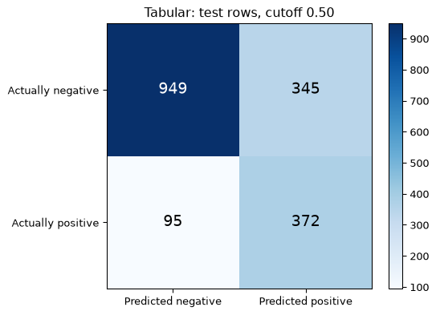
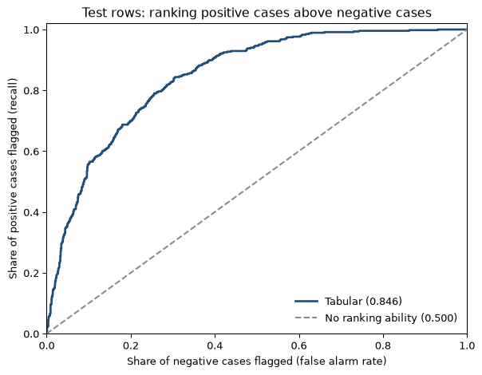
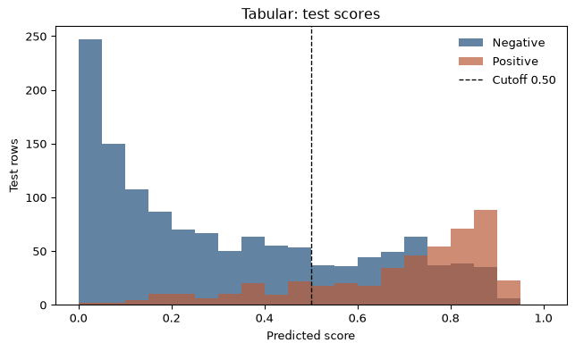
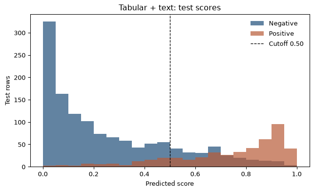
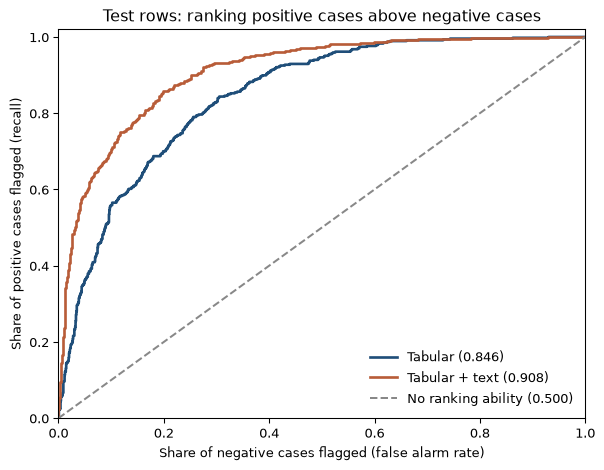

A telecommunications company wants to know which customers are likely to leave. Leaving is called customer churn. The company already stores a structured record for each customer: contract, services, tenure and charges, together with a label that says whether that customer churned. It also has written communications: complaints, billing messages, support conversations and internal notes.
This workshop is a guided investigation of one question.
Do the communications contain useful information beyond the structured customer record, once we judge the models on customers they did not see during fitting?
You will compare three approaches on the same test customers:
Tabular model. Use only the structured customer record.
Combined model. Use the structured record and numerical summaries of the communications.
Text-only model. Use only those numerical summaries.
The model in all three cases is a logistic regression: a simple, standard way to turn customer information into a score between 0 and 1. We keep the model the same so that the comparison is about the information, not about a change of algorithm. A logistic regression is a good way to see a complete prediction workflow. It is not automatically the best model for every churn problem.
Three roles stay separate throughout the session.
The computer calculates scores and performance measures.
The analyst checks whether the procedure is fair and what the measures mean.
The business decides whether to act, whom to contact, and at what cost.
Optional prompt for an AI assistant
“Explain the difference between training data and test data using the customer churn example.”
Use an assistant to understand a command or a result. Check the answer against the tables in this document. An assistant can be wrong. Do not paste real customer communications into an external service unless your organization has authorized that use. The texts in this workshop are synthetic teaching texts.
5.1 Stage 1 — Define the business question
5.1.1 What churn means
Churn is the target. In this dataset it is a text field with two values: Yes if the customer left, and No if the customer stayed. A binary variable has two outcomes. The business question is richer than the label. The company would like a score for each customer, somewhere between 0 and 1, that ranks customers by how similar they are to historical customers who left.
A score is not yet a decision. A score of 0.80 does not, by itself, mean “call this customer” or “offer a discount.” The company still has to choose an action, a budget and a rule for how high a score must be before someone is contacted. That rule is called a cutoff.
Predicting a score is different from predicting only yes or no. The score can be sorted. The company can contact the 200 customers with the highest scores, or it can contact everyone above a cutoff. Those are business choices. The model supplies the ranking.
5.1.2 What information is available
Two files are used.
Dataset A, the customer table. This is the public Telco Customer Churn dataset published on Kaggle: https://www.kaggle.com/datasets/blastchar/telco-customer-churn. One row is one customer. The prepared file in this project is data/raw/telco/telco_customers.csv. It contains the public fields. The identifier is customerID. The target is Churn.
Dataset B, the communications. The file is data/raw/telco/customer_communications.csv. One row is one message. A customer can have several messages. The link to the customer table is customerID. The same folder contains two much smaller files of rewritten notes. They cover only a handful of customers, so this workshop uses the full file.
The communications were generated for this course from the customer records. They are not an export from a live call centre. A complaint about repeated outages could, in a real archive, reveal dissatisfaction that no contract field records. Whether these texts contain that kind of information is something we will measure, not something we will assume.
The same folder has no date on the messages. We will return to that limitation when we build the text features.
5.1.3 The question we will answer
On customers the model has not seen, does adding the communications change the quality of the ranking? The text-only model asks a related question: how far do the communications go by themselves?
5.1.4 A question to write down before any model
If you could contact only 10 percent of the base, whom would you contact first, and which facts would you want in front of you? Keep that sentence.
5.2 Stage 2 — Prepare the Python environment and load the data
5.2.1 What the environment is
The Python environment has to comply with the requirements of the workshop. We will use pandas to hold tables, scikit-learn to fit the model, and matplotlib to draw the charts. An environment keeps those versions together so the same commands can be repeated on another day.
The project instructions already live in README.md and requirements.txt. Use those. Do not create a second environment file.
5.2.2 Open a terminal in the project folder
The project folder is the folder that contains _quarto.yml, requirements.txt, lessons/ and data/. In Cursor or VS Code, open a terminal there. On macOS or Linux:
On Windows, activate the environment with .venv\Scripts\activate instead of source .venv/bin/activate.
If the instructor has already prepared the machines, you only need to activate the existing environment:
source .venv/bin/activate
Then either run the cells of this document from top to bottom, or render it from the project folder:
quarto render lessons/02e-churn-text-ml.qmd
The document asks for the kernel named Python (data-extraction-lesson).
5.2.3 Workshop settings
The next cell finds the project folder, loads the workshop commands, and sets the choices that must stay fixed for a fair comparison.
RANDOM_STATE is a fixed starting number. It makes the split and the model repeatable.
TEST_SIZE is the share of customers held out for testing. 0.25 means about one quarter.
N_TEXT_COMPONENTS is k, the number of numerical text columns. You can change it later. You do not need the algebra that produces those columns.
TEXT_MODE controls the text step. "RUN" computes it. "SAVE" computes it and stores it. "LOAD" reads a stored result and continues. On the machine used to prepare this workshop the text step took a little over two seconds, so the default is "RUN". Use "LOAD" if you have already saved a matching result and want to skip the computation. "LOAD" fails with an explanation if no matching file exists. It will not invent a result.
DECISION_THRESHOLD is the cutoff. Scores at or above this value are flagged as predicted churn. The comparison later in the workshop uses 0.5.
from pathlib import Pathimport osimport sysimport pandas as pd# Replace these two paths, the column roles and the two feature lists# with another tabular file and another text file of the same kind.TABULAR_FILE ="data/raw/telco/telco_customers.csv"TEXT_FILE ="data/raw/telco/customer_communications.csv"ifnot Path(TABULAR_FILE).exists(): os.chdir(Path("..").resolve())ifstr(Path.cwd()) notin sys.path: sys.path.insert(0, str(Path.cwd()))import python.workshop_churn as workshopworkshop.ID_COLUMN ="customerID"workshop.TARGET_COLUMN ="Churn"workshop.POSITIVE_LABEL ="Yes"workshop.TEXT_COLUMN ="text"workshop.TEXT_ORDER_COLUMN ="text_index"workshop.TEXT_TYPE_COLUMN ="communication_type"workshop.NUMERIC_FEATURES = ["tenure","MonthlyCharges","TotalCharges",]workshop.CATEGORICAL_FEATURES = ["gender","SeniorCitizen","Partner","Dependents","PhoneService","MultipleLines","InternetService","OnlineSecurity","OnlineBackup","DeviceProtection","TechSupport","StreamingTV","StreamingMovies","Contract","PaperlessBilling","PaymentMethod",]workshop.RANDOM_STATE =42workshop.TEST_SIZE =0.25workshop.N_TEXT_COMPONENTS =64workshop.TEXT_MODE ="RUN"workshop.DECISION_THRESHOLD =0.5# Other modes for the text step:# workshop.TEXT_MODE = "SAVE" # compute the text columns and save them# workshop.TEXT_MODE = "LOAD" # read saved columns; they must match this split and this k# workshop.TEXT_MODE = "RUN" # compute now, and do not read or write the saved filepd.set_option("display.max_columns", 8)pd.set_option("display.max_colwidth", 80)pd.set_option("display.float_format", lambda value: f"{value:.3f}")print("Working directory:", Path.cwd())workshop.active_settings()
Working directory: /Users/heuchennecedric/Documents/data-extraction-lesson
“Explain in simple business terms what this Python command does.”
5.2.4 Load the two datasets
load_datasets() reads the two files named in the settings cell. It checks that Churn contains only Yes and No. If a numeric field such as total charge is blank, it replaces that blank with zero and prints how many replacements it made. Zero is a fixed rule, not an average computed from other customers.
Tabular file: data/raw/telco/telco_customers.csv
Text file: data/raw/telco/customer_communications.csv
Blank numeric values replaced with zero: 0
Item
Tabular file
Text file
0
Rows
7043
24708
1
Columns
21
6
2
Unique customerID
7043
7043
3
Rows per identifier (minimum)
1
2
4
Rows per identifier (median)
1
4
5
Rows per identifier (maximum)
1
5
6
Identifiers in both files
7043
7043
7
Identifiers only in this file
0
0
A row of the customer table is one customer. A row of the communications file is one message. The two files cannot be stacked side by side as they stand: most customers have more than one message, so a direct match would repeat the customer once per message. The model would then treat copies of the same person as if they were different people. Later we will build one row of text numbers per customer, and only then attach those numbers.
**Customer:** I am calling about the service. What I wanted noted: the line ...
1
7590-VHVEG
2
promotion
**Subject:** An optional add-on\n\nHello,\n\nSome customers add online secur...
2
5575-GNVDE
1
support
**Agent:** Support here. I can help with the service on your account.\n**Cus...
customerID is the shared identifier. text_index orders one customer’s messages. It is not a calendar date. communication_type says what kind of message it is. text is the message.
workshop.target_counts(customers)
Churn
Rows
Share
0
No
5174
0.735
1
Yes
1869
0.265
workshop.text_type_counts(communications)
Text type
Messages
Share of messages
0
complaint
4292
0.174
1
crm_note
4267
0.173
2
support
4265
0.173
3
billing_renewal
3992
0.162
4
promotion
3960
0.160
5
customer_service
3932
0.159
workshop.timing_summary(communications)
Date or time columns
Order column
Columns
0
None
text_index
source_row, customerID, n_texts, text_index, communication_type, text
If this table shows no date or time column, the file cannot tell us whether a message was written before the customer left. text_index only puts one customer’s messages in order. We will not claim that this kind of timing problem has been removed.
5.3 Stage 3 — Build the first logistic regression on the tabular data
5.3.1 The idea, before the command
Historical customers have characteristics and a known outcome. A logistic regression looks for a weighted combination of those characteristics that separates, as well as a simple weighted sum can, the customers who left from the customers who stayed. For a new customer it turns that weighted sum into a score between 0 and 1.
Balanced class weights change the log-likelihood on the fit rows. Let n be the number of fit rows, n_leave the number who left, and n_stay the number who stayed. Each leaver is multiplied by n / (2 n_leave). Each stayer is multiplied by n / (2 n_stay). The weight of a row is 1 / (2 × the share of its own class). The two classes then have the same total weight. The fitted number is the score of that weighted fit.
5.3.2 One split, used for every model
Training data are the customers the model learns from. Test data are held out and used only to judge the result. If we judged the model on the customers it learned from, we would measure memory as well as prediction.
The split is stratified on Churn: the share of churners is kept similar in both groups.
customerID is not a predictor. It names a person, and it would let a model memorize individuals rather than learn a pattern that applies to someone new. Churn is not a predictor. It is the answer.
Numeric fields are tenure, MonthlyCharges and TotalCharges. They are rescaled using the training customers only, then the same rescaling is applied to the test customers. A charge of 70 and a tenure of 70 are different facts; rescaling stops a field with large units from dominating for that reason alone.
Fields such as contract and payment method are categories. Each category (present in the training data) becomes a set of yes/no columns. The technical name is one-hot encoding.
TotalCharges and tenure describe related facts about the same history. The model may use both. That does not make each one a separate cause of churn.
Fitted Tabular data only on 5282 training rows with 30 predictors. Scored 1761 test rows.
Model
Group
Cutoff
Accuracy
Precision
Recall
F1
ROC-AUC
0
Tabular data only
Training
0.500
0.750
0.519
0.802
0.630
0.848
1
Tabular data only
Test
0.500
0.750
0.519
0.797
0.628
0.846
The table has a training row and a test row. Accuracy, precision, recall and F1 use the cutoff. ROC-AUC does not. It summarizes the ranking across cutoffs. We will define each measure in the next stage, using the test row as the one that speaks about prediction.
5.4 Stage 4 — Understand and evaluate the first model
5.4.1 A rule that ignores the customer record
Most customers stay. A rule that predicts “stay” for everyone will therefore be right quite often, while finding none of the customers who leave. That rule is the reference for accuracy.
Test accuracy is 0.750. The always-negative rule reaches 0.735 on the same rows, so the model is only 0.015 above that rule. Test recall is 0.797: at the current cutoff the model flags that share of the positive test rows. Accuracy and recall answer different questions. Accuracy alone is a weak guide when most rows are negative.
Accuracy is the share of test customers whose yes/no flag matches what actually happened. Recall is the share of churners the model flags. Precision is the share of flagged customers who really churned. F1 is a single compromise between precision and recall. It is convenient, and it hides the trade-off, so we still read precision and recall separately.
No one of these numbers describes the model.
5.4.2 Who was flagged
A confusion matrix crosses the actual outcome with the flag. The plain-language counts below are the test customers. In technical shorthand, flagged churners are true positives, flagged stayers are false positives, missed churners are false negatives, and unflagged stayers are true negatives.
workshop.confusion_table(tabular)
Predicted negative
Predicted positive
Actually negative
949
345
Actually positive
95
372
workshop.plot_confusion(tabular)

workshop.explain_confusion(tabular)
At a cutoff of 0.50, the model flags 372 of the 467 positive test rows and misses 95. It also flags 345 negative test rows, and leaves 949 negative rows unflagged. A flag is a score at or above the cutoff. It is an input to a decision, and it is itself a decision only after the business accepts that cutoff.
If the company contacts every flagged customer, recall is the share of leavers it will find, and precision is the share of those contacts who were going to leave. The rest of the contacts are false alarms. Which of those is more expensive is a business question. The model does not answer it.
5.4.3 Ranking, across cutoffs
ROC-AUC measures how often a randomly chosen churner receives a higher score than a randomly chosen stayer. A value of 0.5 means the ranking is no better than chance. A value of 1 means every churner is ranked above every stayer. The curve shows that trade-off as the cutoff moves: the horizontal axis is the share of stayers who are flagged, and the vertical axis is the share of churners who are flagged.
PR-AUC uses the same ranking and reads the contact list. Order the customers from the highest score to the lowest. Pick a leaver at random, each leaver equally likely. Keep that leaver and every customer ranked at least as high. Customers with the same score are kept together. Precision is the share of this group who left. PR-AUC is the expected value of that share. A value of 1 means every leaver stands above every stayer, so the kept group contains only leavers. A ranking with no link to the outcome has PR-AUC equal to the share of leavers. This chapter judges the ranking by ROC-AUC, and one cutoff by precision and recall. Chapter 7 computes PR-AUC because its comparison table and the cloud evaluation both report it.
workshop.plot_roc([tabular])

workshop.explain_train_test(tabular)
Training ROC-AUC is 0.848. Test ROC-AUC is 0.846. The two scores are close. The test score is the one that describes rows the model had not seen.
Use the test ROC-AUC when you talk about customers the model had not seen. One split is one careful experiment. A data scientist would repeat the split, or use another validation design, before a deployment decision. We do not search for settings that look best on the test customers. Doing that would spend the test set during fitting, and the comparison would no longer be honest.
5.4.4 The scores themselves
workshop.plot_probabilities(tabular)

workshop.explain_scores(tabular)
On the test rows, the average predicted score is 0.414. The positive share is 0.265. The average score sits above the positive rate. The model was told to pay extra attention to the positive class, so a score of 0.70 is a ranking signal rather than a statement that the chance of the positive class is 70 percent. The cutoff that triggers an action is a business choice.
The dashed line is the cutoff. Moving it changes who is flagged. It does not refit the model.
At a cutoff of 0.50, test recall is 0.797 and test precision is 0.519. At a cutoff of 0.30, test recall is 0.927 and test precision is 0.433. A lower cutoff flags more rows: it usually finds more of the positive rows and also flags more negative rows. The rest of the workshop keeps the cutoff at 0.50 so the models are compared at the same rule.
You can change 0.30 and run those two cells again. Leave DECISION_THRESHOLD at 0.5 for the comparison of the three models, so they are judged with the same rule.
Optional prompt
“What does ROC-AUC tell me about this model, and what does it not tell me?”
5.5 Stage 5 — Turn communications into numerical features
5.5.1 Why the model cannot read the notes directly
A logistic regression adds weighted fields. It cannot add the sentence “the line has been unreliable” to a monthly charge. We first turn each customer’s messages into numbers.
The existing procedure has three parts.
One document per customer. The customer’s messages are joined in text_index order. A customer with no messages would keep an empty document and would stay in the table.
TF-IDF, short for term frequency–inverse document frequency. Each word, and each two-word phrase, receives a score. The score is high when the expression is common in this customer’s document and uncommon across the other training documents. Very common English words are set aside. The training step keeps up to 5,000 expressions.
LSA, latent semantic analysis. A compression method based on singular value decomposition (SVD) reduces those thousands of scores to k numbers, named text_1, text_2, and so on, up to text_k. Customers who use related wording end up with similar numbers. You do not need SVD to use the result. You do need to know that k is N_TEXT_COMPONENTS in the settings cell.
These columns are a numerical summary of patterns in the writing. They are not complaint counts, and they do not have business names such as “billing anger.”
The word list and the compression are learned from the training customers only. The same learned step is then applied to the test customers. If the test customers were allowed to influence the word list, information from the test set would leak into the model and the evaluation would look better than it is.
flowchart LR A[Several messages per customer] --> B[One document per customer] B --> C[Word scores, TF-IDF] C --> D["text_1 to text_k, LSA"]
flowchart LR
A[Several messages per customer] --> B[One document per customer]
B --> C[Word scores, TF-IDF]
C --> D["text_1 to text_k, LSA"]
5.5.2 A three-line illustration
The next cell is a teaching example. The three lines are not customer records, and they are not fed into the churn models. It uses every word because the example is tiny. The real step uses the restrictions described above, and it uses 64 columns rather than two.
Teaching example only. These three lines are not used in the models.
Closest pair by word-score similarity: Slow service A and Slow service B (0.168).
Word-score similarities:
Slow service A / Slow service B: 0.168
Slow service B / Billing: 0.000
Slow service A / Billing: 0.000
The workshop compresses real documents into 64 numbers. The two columns in the compressed table are the same kind of compression on this three-line example.
bill
connection
fiber
monthly
outage
payment
slow
Teaching line
Slow service A
0.000
0.000
0.935
0.000
0.000
0.000
0.355
Slow service B
0.000
0.623
0.000
0.000
0.623
0.000
0.474
Billing
0.577
0.000
0.000
0.577
0.000
0.577
0.000
illustration["compressed"]
example_1
example_2
Slow service A
0.764
0.000
Slow service B
0.764
0.000
Billing
0.000
1.000
The word-score table is wide enough to read in full. The compressed table is the same idea as text_1 and text_2 in the real pipeline: several word scores become a few numbers. The similarity printed above the table tells you which teaching lines use the more overlapping wording.
5.5.3 Run the text step
This cell uses TEXT_MODE and N_TEXT_COMPONENTS from the settings cell. "RUN" computes the columns. "SAVE" computes them and writes data/processed/text_model_cache/. "LOAD" reads a saved file only when the split, the text file, the number of columns and the processing rules match. A mismatch stops with an instruction. It does not substitute an older or unrelated file.
To recompute and store a new file, set workshop.TEXT_MODE = "SAVE" in the settings cell and run again from that cell downward. To force a fresh computation without reading the saved file, set workshop.TEXT_MODE = "RUN".
Computed texts text features. Results were not saved.
64 text columns for 7043 rows. Fitted on 5282 training documents. Variation retained: 0.467. Seconds: 2.3.
Item
Value
0
Execution mode
RUN
1
Rows
7043
2
Text columns
64
3
Aggregation
Join each identifier's texts in text_index order, separated by a blank line.
4
Training documents used to fit TF-IDF and LSA
5282
5
Test documents used to fit TF-IDF and LSA
0
6
Empty documents, kept in the table
0
7
Word and phrase columns before compression
3526
8
Share of training word-score variation retained
0.467
9
Seconds
2.300
10
Saved file
Not saved in this run
workshop.preview_text_features(text_features)
customerID
text_1
text_2
text_3
text_4
text_5
0
3704-IEAXF
0.581
-0.140
0.193
0.107
0.162
1
5175-AOBHI
0.423
0.049
-0.029
-0.105
-0.091
2
6922-NCEDI
0.506
-0.205
-0.018
-0.064
0.108
3
3143-ILDAL
0.334
0.038
-0.176
-0.063
-0.007
4
0872-NXJYS
0.258
-0.202
0.017
0.182
-0.068
The preview shows customerID and the first text columns. The summary reports how many training documents were used to fit TF-IDF and LSA, and it must report that zero test documents were used for that fit. “Share of training word-score variation retained” says how much of the variation in the word scores the k columns keep. The rest is discarded as smaller detail. That percentage is a description of the compression, not a measure of churn prediction.
Optional prompt
“Help me understand why adding customer communications might improve a churn prediction model. Also explain how a text file could make the model look better for a reason a manager should not trust.”
5.6 Stage 6 — Combine the structured fields and the text columns
The text columns can now be treated as ordinary numeric predictors. combine_with_text() attaches them to the training customers and the test customers by customerID.
The checks underneath the command are the ones that protect the comparison.
The number of rows after the match must equal the number before it. A larger number would mean a duplicated customer. A smaller number would mean a lost customer.
A customer with no text stays in the table. The text columns are filled with zeros. Zero here means “no document was available.” It is not a neutral topic score. In the file used today, check whether that count is zero.
customerID is the match key only. It is not given to the logistic regression as a predictor.
Churn stays the outcome. It is not copied into the predictors.
The combined table holds two kinds of information: the structured account fields, and a numerical summary of the free-text messages. They enter the model as one list of columns. The technical name for joining them before the model is early fusion. The idea is simply that the model sees both blocks at once.
Matched text columns on customerID. Row counts must stay the same.
Check
Training
Test
0
Rows before the match
5282
1761
1
Rows after the match
5282
1761
2
Rows with no text, kept and filled with zeros
0
0
3
Duplicate customerID after the match
0
0
5.7 Stage 7 — Fit and evaluate the combined model
The command below fits a second logistic regression. The model family, the cutoff, the training customers and the test customers are the same as in Stage 3. The new ingredient is the block of text columns. Those columns were produced by a text step fitted on the training customers only.
Fitted Tabular data and text on 5282 training rows with 94 predictors. Scored 1761 test rows.
Model
Group
Cutoff
Accuracy
Precision
Recall
F1
ROC-AUC
0
Tabular data and text
Training
0.500
0.821
0.618
0.857
0.718
0.907
1
Tabular data and text
Test
0.500
0.820
0.620
0.831
0.710
0.908
workshop.explain_train_test(combined)
Training ROC-AUC is 0.907. Test ROC-AUC is 0.908. The two scores are close. The test score is the one that describes rows the model had not seen.
workshop.plot_probabilities(combined)

workshop.explain_score_shape(combined)
On the test rows, 5% of the scores are below 0.01 or above 0.99. Many rows sit between those extremes, so the cutoff changes who would be flagged.
Compare this histogram with the tabular one. Scores that sit between the two ends mean the cutoff still changes who would be contacted. A pile of scores at 0 and at 1 would mean the model is very sure about most customers.
5.7.1 The tabular model and the combined model on the same test customers
workshop.compare_models([tabular, combined])
Model
Test rows
Positive
Cutoff
...
Precision
Recall
F1
ROC-AUC
0
Tabular data only
1761
467
0.500
...
0.519
0.797
0.628
0.846
1
Tabular data and text
1761
467
0.500
...
0.620
0.831
0.710
0.908
2 rows × 9 columns
workshop.plot_roc([tabular, combined])

Read the test ROC-AUC column as the ranking comparison. Read recall and precision as the comparison at the shared cutoff of 0.5. A gain in ranking is one fact. A gain large enough to pay for collecting and processing communications is a second fact. A reason for the business to change a retention process is a third fact. The table can support the first. It does not settle the second or the third.
We still have to fit the text-only model before drawing the full comparison. The checks below confirm that these two models used the same test customers and that the text step did not learn from them.
Tabular data only: same test rows and same target labels
Pass
1761 test rows
2
Tabular data only: identifier and target excluded from predictors
Pass
None of those fields are predictors
3
Tabular data and text: same test rows and same target labels
Pass
1761 test rows
4
Tabular data and text: identifier and target excluded from predictors
Pass
None of those fields are predictors
5
Tabular data and text: no test row dropped for missing text
Pass
Missing text filled with zeros: 0 test rows
6
TF-IDF and LSA fitted on the training rows only
Pass
Training documents fitted: 5282. Test documents fitted: 0.
5.8 Stage 8 — Fit and evaluate the text-only model
The third model uses the text columns and no structured fields. Same training customers, same test customers, same cutoff, same kind of logistic regression.
On the same test rows, ROC-AUC is 0.846 for the tabular model, 0.908 for the tabular model plus text, and 0.829 for the text-only model. The combined model differs from the tabular model by +0.062 ROC-AUC.
At a cutoff of 0.50, test recall is 0.797, 0.831 and 0.719. Test precision is 0.519, 0.620 and 0.599.
The combined model ranks the test rows better than the tabular model by a visible margin on this split. A visible margin on one split is a reason to ask whether the notes contain new information and whether they were available before the outcome. It becomes a business case only if the gain is large enough to pay for collecting and processing the texts, under the company’s capacity to act.
ROC-AUC measures ranking across cutoffs. Recall and precision measure one chosen cutoff. A better ranking can support a decision. The offer, the budget and the choice of who may be contacted remain with the business. A higher score does not show that a field caused the positive outcome.
Important
If a test ROC-AUC sits at the top of the scale, treat that as a warning before you take the number to a meeting. Text alone should not rank the customers perfectly. A gain for the combined model, if the table shows one, can be a limited addition to the structured fields.
Several outcomes were possible, and a manager should be able to name them.
Text alone can contain information about dissatisfaction that the structured fields miss.
The structured fields can contain predictive information that the messages never state.
Using both can help when the two sources are complementary.
The combined model can also fail to beat the simpler ones. Nothing in the method guarantees an improvement.
5.8.3 What a manager should ask before anyone uses a score
Return to the sentence you wrote in Stage 1. Then ask at least these questions.
Does the model improve performance on customers it did not see during fitting? The test rows are the evidence in this workshop. One split still leaves uncertainty.
Is any improvement large enough to pay for collecting, storing and processing the communications?
Are the scores reliable enough for the decision, or are they only a ranking? The average score and the cutoff discussion in Stage 4 are the start of that question, not the end of it.
What action follows a high score? A call, an offer, a service fix and a decision to do nothing are different actions with different costs.
Were the notes available before the outcome? This file has no message date, so it cannot answer that.
Did any field, including the wording of a note, already contain the outcome?
What has to be settled on data quality, privacy, fairness and operations before a score is allowed to change how customers are treated?
A data scientist remains responsible for the validation design, the monitoring and the failure cases. The useful outcome of this workshop is that you can tell a careful analysis from a score that has not earned the decision yet.
Optional prompt
“What questions should I ask a data scientist before deploying this churn model?”
Compare the answer with the seven questions above.
5.9 Save the test scores
The next workshop decides whom to contact. It needs each test customer’s score. It does not need the fitted model.
The cell below writes the combined model’s test scores. Those customers were not used to fit the model. The same function accepts tabular or text_only if you want that model’s scores instead.
SCORE_FILE is the path of the file this cell writes, folder and file name together. The example is data/processed/telco/test_probabilities_with_text.csv. For another dataset, set SCORE_FILE to another path, for example data/processed/mydata/scores.csv. In the next workshop, set SCORE_FILE to that same path. The scores are loaded from the path written there. They are not loaded from data/processed/telco/ unless that is the path you set.
The file has one row per test customer.
customer_id is the identifier, whatever that column was called in the source table.
p0 is the test score.
observed_outcome is 1 when the target equals the positive label, and 0 otherwise.
Saved 1761 test scores to data/processed/telco/test_probabilities_with_text.csv.
customer_id
p0
observed_outcome
0
5343-SGUBI
0.198
0
1
5442-BXVND
0.067
0
2
6434-TTGJP
0.065
0
3
1628-BIZYP
0.845
0
4
0298-XACET
0.029
0
...
...
...
...
1756
3780-DDGSE
0.285
0
1757
4154-AQUGT
0.761
1
1758
1116-DXXDF
0.469
0
1759
3237-AJGEH
0.788
1
1760
6704-UTUKK
0.594
0
1761 rows × 3 columns
5.10 Save both scores, for the fit rows and the test rows
save_scores writes the test scores of the communications model. Chapter 6 reads that file. The next cell writes a second file. A later method can reload both models, and both roles, without fitting again.
MODEL_ROWS_FILE is the path of that second file. The example is data/processed/telco/model_rows.csv. For another dataset, choose another path, for example data/processed/mydata/model_rows.csv. Chapter 7 reads whatever path you set here.
The file has one row per customer.
customer_id is the identifier.
role is fit or test. A test row was not used to fit the model.
p_logistic_tabular is the score from the structured fields.
p_logistic_text is the score from the structured fields plus the communications. On a test row it equals p0 in SCORE_FILE.
observed_outcome is 1 when the target equals the positive label, and 0 otherwise.
Saved 5282 fit rows and 1761 test rows to data/processed/telco/model_rows.csv.
customer_id
role
p_logistic_tabular
p_logistic_text
observed_outcome
0
3704-IEAXF
fit
0.032
0.013
0
1
5175-AOBHI
fit
0.657
0.841
1
2
6922-NCEDI
fit
0.033
0.098
0
3
3143-ILDAL
fit
0.577
0.724
1
4
0872-NXJYS
fit
0.865
0.969
1
...
...
...
...
...
...
7038
3780-DDGSE
test
0.480
0.285
0
7039
4154-AQUGT
test
0.741
0.761
1
7040
1116-DXXDF
test
0.369
0.469
0
7041
3237-AJGEH
test
0.623
0.788
1
7042
6704-UTUKK
test
0.717
0.594
0
7043 rows × 5 columns
5.11 Troubleshooting
Run the cells from the top if you change a setting. Later cells remember the earlier results until you rerun them.
The command cannot find the data, or it mentions _quarto.yml. The terminal or the notebook is not in the project folder. That folder contains _quarto.yml, lessons/ and data/. Start the terminal there, or rerun the settings cell, which moves up one folder when it cannot see the customer file.
ModuleNotFoundError for pandas, sklearn or matplotlib. The environment is missing a package or is not the one this document uses. Activate .venv, run pip install -r requirements.txt, and select the kernel Python (data-extraction-lesson). If that kernel is missing, rerun the ipykernel install command in Stage 2.
A message says a CSV file was not found. The settings cell names the two files. The example uses data/raw/telco/telco_customers.csv and data/raw/telco/customer_communications.csv. Replace those two paths when you use another table and another text file of the same kind. The public source file is data/raw/telco/WA_Fn-UseC_-Telco-Customer-Churn.csv.
A message mentions the identifier. The match between the tabular file and the text file has failed, or an identifier was about to be used as a predictor. Read the full message. Do not delete the identifier from the file; the models need it as a match key and refuse it as a predictor.
LOAD says no saved text features were found, or that the saved file does not match.LOAD is doing what it should. Set TEXT_MODE to "RUN" to compute the step now, or to "SAVE" to compute it and write a file that matches the current seed, split, text file and value of N_TEXT_COMPONENTS. Then rerun from the settings cell. Changing k requires a new run. An old file for a different k is not reused.
A later cell says a name is not defined. An earlier cell did not run. Run from the settings cell downward.
The next workshop cannot find the score file. Rerun the save cell. Then set SCORE_FILE in the next workshop to the same folder and file name, for example data/processed/mydata/scores.csv.
An error message is unclear.
Optional prompt
“Explain this error message and suggest the smallest safe correction.”
Paste the error, not a customer extract. Apply the smallest change that the message itself describes, then rerun the affected cell.
5.12 Run the workshop from the start
Open a terminal in the project folder and activate .venv.
Open lessons/02e-churn-text-ml.qmd and select the kernel Python (data-extraction-lesson).
Run every cell from top to bottom. Leave the settings at the printed defaults on the first pass.
Read each table or chart, then the paragraph under it. The sentences produced by the explain_ commands use the numbers just calculated.
At the end, read the seven questions in Stage 8 against the final comparison table.
The last modelling cells write SCORE_FILE and MODEL_ROWS_FILE. Chapter 6 reads SCORE_FILE. Chapter 7 reads both. For another dataset, set the same paths in those chapters, for example data/processed/mydata/scores.csv and data/processed/mydata/model_rows.csv.
To produce the HTML document instead of running the cells by hand: